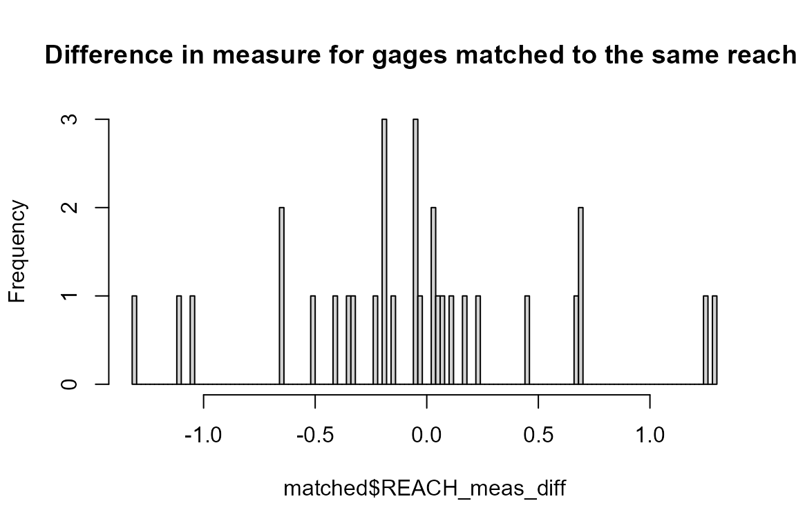

Introduction
nhdplusTools offers a few indexing functions and some
supporting functions that are worth being aware of. Most of these
functions wrap similar but more general functions from hydroloom.
The core functions are: get_flowline_index() and
get_waterbody_index() – they do the heavy lifting of
finding flowlines and waterbodies near point locations.
For flowline indexes, there are a number of useful utilities: -
disambiguate_flowline_indexes() uses numeric or character
attributes to attempt to determine the best flowline match when many
near by matches exist. This is especially useful for mainstem /
tributary disambiguation. - get_hydro_location() retrieves
the point location of an index along a flowline. -
rescale_measures() converts 0:100 reachcode measures to
0:100 flowline measures. - get_partial_length() retrieves a
partial length (upstream and downstream) of an index location. -
get_path_lengths() retrieves the distance between the
outlets of pairs of flowlines. Use with
get_partial_length() to determine network distance between
indexes.
For waterbody indexes, the get_wb_outlet() function is
helpful too determine which flowline is the outlet of a waterbody.
Flowline Indexing
First we’ll load up some data. In this case, we use flowlines from the NHDPlus subset that’s included in the package and a set of points to index. We’ll use the NHDPlus Gages layer for this example. The data in this example is big. The R session needs a lot of memory to hold the whole NHDPlus flowline layer and run the calculations.
library(nhdplusTools)
nhdplus_path(file.path(work_dir, "natseamless.gpkg"))
flowlines <- sf::read_sf(nhdplus_path(), "NHDFlowline_Network")
gages <- sf::read_sf(nhdplus_path(), "Gage")Now we can call get_flowline_index() on the data we just
loaded. The get_flowline_index() function has an input,
search_radius which should correspond to the units of the
points input. Projection and unit conversion is attempted.
See the function documentation for details. See the documentation of the
nn2 function from the
RANN package for more information on how the search works.
NOTE: If you have a small area in which you need flowline indexes,
get_flowline_index() has an option to download flowlines in
the bounding box of your input points.
indexes <- get_flowline_index(sf::st_transform(flowlines, 5070), # albers
sf::st_transform(sf::st_geometry(gages), 5070),
search_radius = units::set_units(200, "meters"),
max_matches = 1)
#> Warning in index_points_to_lines.hy(x, points, search_radius = search_radius, :
#> converting to LINESTRING, this may be slow, check results
#> Warning in index_points_to_lines.hy(x, points, search_radius = search_radius, :
#> dropping z coordinates, this may be slow
indexes <- left_join(sf::st_sf(id = c(1:nrow(gages)),
geom = sf::st_geometry(gages)),
indexes, by = "id")
plot(sf::st_geometry(sf::st_zm(flowlines)))
plot(sf::st_geometry(indexes), add = TRUE)Now let’s look at the results and see how the
get_flowline_index() did. The below shows the percent of
COMIDs and REACHCODEs that match and shows a histogram of the measure
differences for the REACHCODEs that were matched.
p_match <- 100 * length(which(indexes$COMID %in% gages$FLComID)) / nrow(gages)
paste0(round(p_match, digits = 1),
"% were found to match the COMID in the NHDPlus gages layer")
#> [1] "58.7% were found to match the COMID in the NHDPlus gages layer"
p_match <- 100 * length(which(indexes$REACHCODE %in% gages$REACHCODE)) / nrow(gages)
paste0(round(p_match, digits = 1),
"% were found to match the REACHCODE in the NHDPlus gages layer")
#> [1] "60.9% were found to match the REACHCODE in the NHDPlus gages layer"
matched <- cbind(indexes,
dplyr::select(sf::st_drop_geometry(gages),
REACHCODE_ref = REACHCODE,
COMID_ref = FLComID,
REACH_meas_ref = Measure)) %>%
dplyr::filter(REACHCODE == REACHCODE_ref) %>%
dplyr::mutate(REACH_meas_diff = REACH_meas - REACH_meas_ref)
hist(matched$REACH_meas_diff, breaks = 100,
main = "Difference in measure for gages matched to the same reach.")Flowline Indexing with higher precision
The above example used the native nodes of the NHDPlus as the
potential measure snap locations. The get_flowline_index()
function has the ability to refine these by segmentizing the line to
some given resolution. Let’s try the same thing using a resolution of
10m and see if we can do any better.
Note that the sf::st_segmentize function takes care of
the distance conversion and segmentizes our lon/lat lines to 10m on the
fly. Also note, we are working in units of degrees for this sample.
(this is probably not a good way to do things, but is being shown here
for the sake of demonstration)
indexes <- get_flowline_index(flowlines,
sf::st_geometry(gages),
search_radius = units::set_units(0.1, "degrees"),
precision = 10)
#> st_as_s2(): dropping Z and/or M coordinate
#> Warning in index_points_to_lines.hy(x, points, search_radius = search_radius, :
#> converting to LINESTRING, this may be slow, check results
#> Warning in index_points_to_lines.hy(x, points, search_radius = search_radius, :
#> dropping z coordinates, this may be slow
indexes <- left_join(data.frame(id = seq_len(nrow(gages))), indexes, by = "id")Now lets look at out comparison again.
p_match <- 100 * length(which(indexes$COMID %in% gages$FLComID)) / nrow(gages)
paste0(round(p_match, digits = 1),
"% were found to match the COMID in the NHDPlus gages layer")
#> [1] "76.1% were found to match the COMID in the NHDPlus gages layer"
p_match <- 100 * length(which(indexes$REACHCODE %in% gages$REACHCODE)) / nrow(gages)
paste0(round(p_match, digits = 1),
"% were found to match the REACHCODE in the NHDPlus gages layer")
#> [1] "76.1% were found to match the REACHCODE in the NHDPlus gages layer"
matched <- cbind(indexes,
dplyr::select(sf::st_set_geometry(gages, NULL),
REACHCODE_ref = REACHCODE,
COMID_ref = FLComID,
REACH_meas_ref = Measure)) %>%
dplyr::filter(REACHCODE == REACHCODE_ref) %>%
dplyr::mutate(REACH_meas_diff = REACH_meas - REACH_meas_ref)
hist(matched$REACH_meas_diff, breaks = 100,
main = "Difference in measure for gages matched to the same reach.")
Finding multiple indexes
get_flowline_index() has a parameter
max_matches that controls how many indexed flowlines are
returned per point. This is useful for points that are near many
flowlines and some further disambiguation is needed to determine exactly
which flowline the point should be indexed to.
For this example, we’ll just look at one point but keep all the sites for disambiguation down below.
all_indexes <- get_flowline_index(flowlines,
sf::st_geometry(gages),
search_radius = units::set_units(0.01, "degrees"),
max_matches = 10)
#> Warning in index_points_to_lines.hy(x, points, search_radius = search_radius, :
#> converting to LINESTRING, this may be slow, check results
#> Warning in index_points_to_lines.hy(x, points, search_radius = search_radius, :
#> dropping z coordinates, this may be slow
indexes <- left_join(sf::st_sf(id = 42,
geom = sf::st_geometry(gages)[42]),
all_indexes[all_indexes$id == 42, ], by = "id")
plot(sf::st_geometry(sf::st_buffer(indexes, 500)), border = NA)
plot(sf::st_geometry(indexes), add = TRUE)
plot(sf::st_geometry(sf::st_zm(flowlines)), col = "blue", add = TRUE)
indexes
#> Simple feature collection with 10 features and 5 fields
#> Geometry type: POINT
#> Dimension: XY
#> Bounding box: xmin: -89.35278 ymin: 43.20867 xmax: -89.35278 ymax: 43.20867
#> Geodetic CRS: GRS 1980(IUGG, 1980)
#> id COMID REACHCODE REACH_meas offset
#> 1 42 13293452 07090002007737 0.0000 0.0004868953
#> 2 42 13293456 07090002007738 100.0000 0.0004868953
#> 3 42 13293432 07090002007736 100.0000 0.0004868953
#> 4 42 13293430 07090002007639 0.0000 0.0008846702
#> 5 42 13293454 07090002007638 100.0000 0.0008846702
#> 6 42 13294394 07090002007637 100.0000 0.0049572540
#> 7 42 13294128 07090002007636 100.0000 0.0052999159
#> 8 42 13294382 07090002007725 0.0000 0.0052999159
#> 9 42 13294274 07090002007725 3.6313 0.0065388475
#> 10 42 13293458 07090002007725 12.5173 0.0099172984
#> geom
#> 1 POINT (-89.35278 43.20867)
#> 2 POINT (-89.35278 43.20867)
#> 3 POINT (-89.35278 43.20867)
#> 4 POINT (-89.35278 43.20867)
#> 5 POINT (-89.35278 43.20867)
#> 6 POINT (-89.35278 43.20867)
#> 7 POINT (-89.35278 43.20867)
#> 8 POINT (-89.35278 43.20867)
#> 9 POINT (-89.35278 43.20867)
#> 10 POINT (-89.35278 43.20867)Now that we have multiple matches, we can use the function
disambiguate_flowline_indexes() to figure out which is the
“best” match. “best” is in scare quotes here because there are many
potential sources of ambiguity here and we are really just narrowing
down based on the information we have at hand. (read below for a case in
point)
Below, we run disambiguate_flowline_indexes() on all the
indexes we found then pull out the one we looked at just above as an
example (gage 42 in our list).
unique_indexes <- disambiguate_flowline_indexes(
all_indexes,
flowlines[, c("COMID", "TotDASqKM"), drop = TRUE],
data.frame(ID = seq_len(nrow(gages)),
area = gages$DASqKm))
unique_index <- left_join(sf::st_sf(id = 42,
geom = sf::st_geometry(gages)[42]),
unique_indexes[unique_indexes$id == 42, ], by = "id")
plot(sf::st_geometry(sf::st_buffer(indexes, 500)), border = NA)
plot(sf::st_geometry(indexes), add = TRUE)
plot(sf::st_geometry(sf::st_zm(flowlines[flowlines$COMID %in% indexes$COMID,])),
col = "grey", lwd = 3, add = TRUE)
plot(sf::st_geometry(sf::st_zm(flowlines[flowlines$COMID %in% unique_index$COMID,])),
col = "blue", add = TRUE)
unique_index
#> Simple feature collection with 1 feature and 5 fields
#> Geometry type: POINT
#> Dimension: XY
#> Bounding box: xmin: -89.35278 ymin: 43.20867 xmax: -89.35278 ymax: 43.20867
#> Geodetic CRS: GRS 1980(IUGG, 1980)
#> id COMID REACHCODE REACH_meas offset geom
#> 1 42 13293454 07090002007638 100 0.0008846702 POINT (-89.35278 43.20867)As can be seen in this example, a drainage area disambiguation resulted in an unexpected result. Further inspection of this particular gage and the network data used, shows that the main path through this small diversion is coded counter to the main path in the real world. So in this case, if our interest is in the best match to the hydrographic network data we have, this is the best match, as the closest spatial match is incorrectly modeled by the hydrographic data set. As always, buyer beware!
Waterbody Indexing
The get_flowline_index() function estimates a
hydrographic address as a linear reference to a flowline. For points
near bodies of water, these could be an inappropriate kind of index.
This is because where flowlines run through a waterbody. they are
“artificial paths” and do not represent the waterbody. The
get_waterbody_index() function is intended to address
points that are in or near the shore of a waterbody.
This next block of code loads the NHDPlus Waterbody layer and creates
an interactive map. Of interest on gages that are near the short of
bodies of water but far away from flowlines. Note that we drop the
NHDPlus geometry and use the source LonSite and
LatSite attributes for geometry.
waterbody <- sf::read_sf(nhdplus_path(), "NHDWaterbody")
gages <- sf::st_drop_geometry(gages) %>%
dplyr::filter(!is.na(LonSite)) %>%
sf::st_as_sf(coords = c("LonSite", "LatSite"), crs = 4326)
plot(sf::st_geometry(sf::st_zm(flowlines)))
plot(sf::st_geometry(waterbody), add = TRUE)
plot(sf::st_geometry(gages), add = TRUE)This next block shows how to call get_flowline_index()
and get_waterbody_index() and what the output looks
like.
flowline_indexes <- left_join(data.frame(id = seq_len(nrow(gages))),
get_flowline_index(
sf::st_transform(flowlines, 5070),
sf::st_geometry(sf::st_transform(gages, 5070)),
search_radius = units::set_units(200, "m")), by = "id")
#> Warning in index_points_to_lines.hy(x, points, search_radius = search_radius, :
#> converting to LINESTRING, this may be slow, check results
#> Warning in index_points_to_lines.hy(x, points, search_radius = search_radius, :
#> dropping z coordinates, this may be slow
indexed_gages <- cbind(dplyr::select(gages,
orig_REACHCODE = REACHCODE,
orig_Measure = Measure,
FLComID,
STATION_NM),
flowline_indexes,
get_waterbody_index(
st_transform(waterbody, 5070),
st_transform(gages, 5070),
st_drop_geometry(flowlines),
search_radius = units::set_units(200, "m")))
plot(sf::st_geometry(sf::st_zm(flowlines)))
plot(sf::st_geometry(waterbody), add = TRUE)
plot(sf::st_geometry(indexed_gages), add = TRUE)
dplyr::select(sf::st_drop_geometry(indexed_gages), near_wb_COMID, near_wb_dist, in_wb_COMID, outlet_fline_COMID)
#> near_wb_COMID near_wb_dist in_wb_COMID outlet_fline_COMID
#> 1 NA NA NA NA
#> 2 13293226 11.013063 NA 13294384
#> 3 NA NA NA NA
#> 4 167120949 16.862351 NA 13294360
#> 5 NA NA NA NA
#> 6 NA NA NA NA
#> 7 13293262 22.640184 NA 13294312
#> 8 NA NA NA NA
#> 9 13296360 50.380329 NA 13297172
#> 10 NA NA NA NA
#> 11 NA NA NA NA
#> 12 13293262 64.925912 NA 13294312
#> 13 13293262 164.160184 NA 13294312
#> 14 167120949 39.327388 NA 13294360
#> 15 NA NA NA NA
#> 16 NA NA NA NA
#> 17 NA NA NA NA
#> 18 13293284 57.456159 13293284 NA
#> 19 13293262 33.292260 NA 13294312
#> 20 NA NA NA NA
#> 21 NA NA NA NA
#> 22 NA NA NA NA
#> 23 13293226 181.370856 NA 13294384
#> 24 NA NA NA NA
#> 25 14711422 22.566279 NA NA
#> 26 NA NA NA NA
#> 27 NA NA NA NA
#> 28 NA NA NA NA
#> 29 NA NA NA NA
#> 30 NA NA NA NA
#> 31 NA NA NA NA
#> 32 NA NA NA NA
#> 33 NA NA NA NA
#> 34 NA NA NA NA
#> 35 NA NA NA NA
#> 36 13293316 37.633591 13293316 13294374
#> 37 NA NA NA NA
#> 38 NA NA NA NA
#> 39 13293322 6.737635 NA 13294344
#> 40 NA NA NA NA
#> 41 NA NA NA NA
#> 42 13293322 3.914543 NA 13294344
#> 43 NA NA NA NA
#> 44 13293322 6.737635 NA 13294344
#> 45 13293262 50.163000 NA 13294312